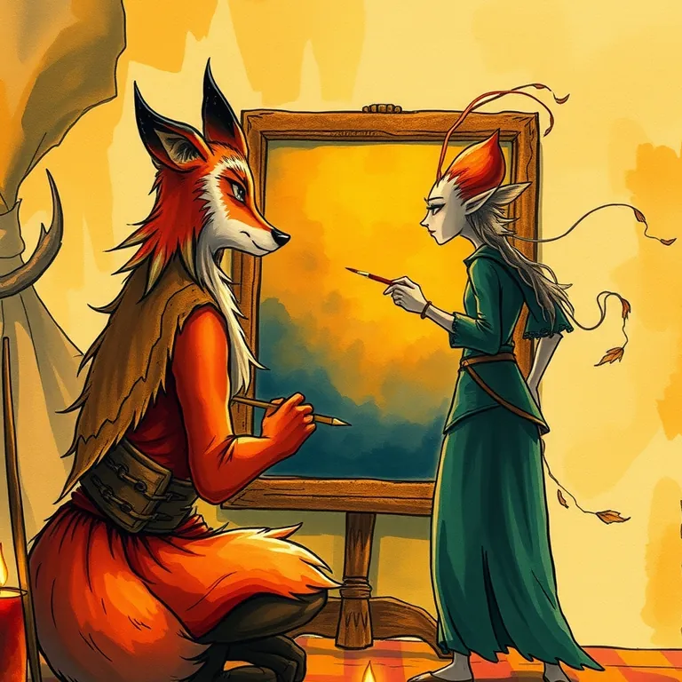

Canva Magic Studio vs. Photoroom

One could conjure a banner, a poster, or a crest. The other only ever wanted to talk about kitchen counters.
Canva Magic Studio (#1 of 51, 8.7/10) and Photoroom (#7 of 51, 7.9/10) get compared a lot, but they solve different jobs. Canva Magic Studio is best used for slapping together a party banner, a quest poster, or a social-media crest when you need it to look professional in the next ten minutes, not the next ten hours. Photoroom is best used for stripping the background out of a product photo and dropping in something cleaner, in about the time it takes to sharpen a quill.
Hand it a vague idea and a color scheme and it comes back with something you'd actually hang on the guild hall wall. It won't win a court artist's respect, but it'll win the argument about who has to make the flyer. It erased the clutter like it held a personal grudge against kitchen counters. Every product photo came back looking like it belonged in a real catalog instead of a hastily lit back room.
Canva Magic Studio, in short
Slapping together a party banner, a quest poster, or a social-media crest when you need it to look professional in the next ten minutes, not the next ten hours. Every adventuring party needs a sigil before anyone takes them seriously. This is the fastest way to get one without apprenticing under a court illustrator for a decade.
Read the full Canva Magic Studio review →
Photoroom, in short
Stripping the background out of a product photo and dropping in something cleaner, in about the time it takes to sharpen a quill. A merchant's wares only sell if they look good on the market stall banner. This is the fastest way to make a product photo presentable without hiring a court painter.
Read the full Photoroom review →
Who should pick which
If your realm's problem is a hundred different kinds of graphics, banners, posters, social crests, Canva Magic Studio's breadth covers it in one toolkit. If your realm's problem is specifically photographs of goods for market day, product shots that need a clean background and nothing else, Photoroom's narrower focus does that one job better than a generalist tool ever will. The two aren't rivals so much as a court painter and a market photographer, and plenty of guilds keep both on retainer.
Common questions
Which one should a general adventuring party use for graphics?
Canva Magic Studio. Its breadth across banners, posters, social crests, and presentations covers far more ground than a tool built for one specific job.
Which is best specifically for product photos?
Photoroom. It's purpose-built for background removal and product staging, and outperforms a general design tool for that one job.
Can a guild use both at once?
Yes, and it's a common split: Canva for general marketing graphics, Photoroom for anything that's specifically a product photo.